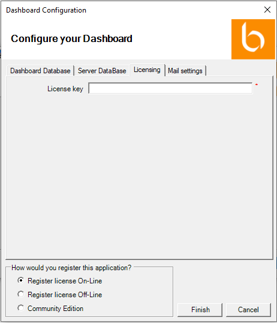
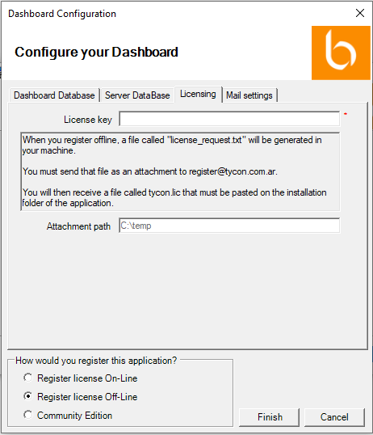

En la pestaña “Licensing”:
- En caso de registrar la licencia de manera online, en el campo “License key” ingrese el código de licencia de BIZUIT Dashboard Server que recibió por correo electrónico. Tenga en cuenta que para poder registrar la licencia online, deberá contar con acceso a internet:

- En caso de no contar con acceso a Internet, seleccione la opción “Register license Off-Line”, en el campo “License Key” ingrese el código de licencia de BIZUIT Dashboard Server que recibió por correo electrónico y en el campo “Attachment path” escriba un directorio de su pc en el cual se generara un archivo llamado license_request.txt. Luego navegue al directorio seleccionado, obtenga el archivo license_request.txt y envíelo como attachment a la dirección register@tycon.com.ar.. El equipo de soporte de BIZUIT le enviará un archivo “tycon.lic” que deberá colocar en el directorio de instalación de la API de BIZUIT Dashboard Server (por defecto c:\inetpub\wwwroot\BizuitDashboardAPI) y luego reiniciar IIS:

Si selecciona la opción “Community Edition” la instalación continuará y podrá ejecutar el software normalmente pero con las limitaciones de la versión "Community Edition". Posteriormente podrá registrar BIZUIT Dashboard Server utilizando la herramienta de licenciamiento provista para tal fin.
Anterior / Siguiente